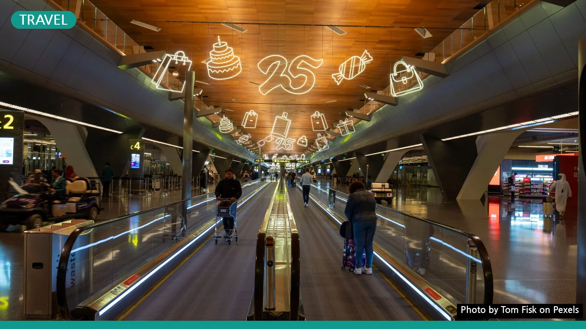

면세점 쇼핑 한도 얼마까지? 초과 시 세금 폭탄 피하는 세관 신고 가이드
사진: Tom Fisk / Pexels (무료 이미지, 출처 표기)
면세점 구매 한도와 입국 면세 한도의 차이점
해외여행을 준비하면서 가장 헷갈려하는 부분 중 하나가 바로 '구매 한도'와 '면세 한도'의 개념입니다. 과거에 존재했던 내국인의 면세점 구매 한도(기존 미화 5,000달러)는 전면 폐지되었습니다. 따라서 현재는 출국 시 면세점에서 금액 제한 없이 자유롭게 물건을 구매할 수 있습니다.
하지만 물건을 마음껏 살 수 있다고 해서 세금까지 모두 면제되는 것은 아닙니다. 우리나라로 다시 들어올 때 세금을 내지 않고 들여올 수 있는 기준인 '면세 한도'는 엄격하게 정해져 있습니다. 이 한도를 초과하면 반드시 입국 시 세관에 신고하고 관세(해외에서 반입하는 물품에 부과하는 세금)를 납부해야 합니다.
2026년 기준 입국자 휴대품 면세 범위
관세청 규정에 따른 여행자 1인당 기본 면세 한도는 미화 800달러입니다. 이 한도는 해외에서 취득한 물품(선물 받은 물품 포함)과 면세점에서 구매한 물품의 총합산 가격을 기준으로 적용됩니다. 가족이라 하더라도 면세 한도는 합산되지 않으며, 인당 각자 계산하는 것이 원칙입니다.
다만 술, 담배, 향수는 기본 면세 한도인 800달러와 상관없이 아래 표와 같은 별도의 추가 면세 기준이 적용됩니다.
예를 들어, 700달러짜리 가방 하나와 350달러짜리 위스키 1병(1L)을 구매했다면 가방은 기본 면세 한도(800달러 이하)에 들어가고, 위스키는 별도 주류 면세 범위(2병, 2L, 400달러 이하)에 해당하므로 모두 세금을 내지 않고 입국할 수 있습니다. 해당 기준은 2026년 현재 적용 중인 기준으로, 세부 시행령에 따라 변동될 수 있으므로 출국 전 관세청 홈페이지에서 다시 확인하시는 것이 좋습니다.
놓치기 쉬운 면세점 이용 주의사항
많은 여행객이 실수하는 부분 중 하나는 동반 가족의 면세 한도 합산입니다. 예를 들어 2인 가족이 입국하면서 1,200달러짜리 가방 1개를 반입할 때, '인당 800달러씩이니 합산하면 1,600달러라 면세가 되겠지'라고 생각하는 경우가 많습니다. 그러나 1개의 물품은 한 사람의 휴대품으로 간주하므로, 가방 가격 1,200달러에서 1인 면세 한도인 800달러를 차감한 나머지 400달러에 대해서는 관세가 부과됩니다.
만 19세 미만의 미성년자는 주류와 담배에 대한 면세 혜택이 아예 적용되지 않는다는 점도 유의해야 합니다. 미성년자 자녀의 이름으로 양주나 담배를 대리 면세 구매하여 반입하다 적발되면 세금 부과는 물론 가산세까지 물 수 있습니다.
세관 자진신고 혜택과 미신고 불이익
면세 범위를 초과한 물품이 있다면 입국 시 자진해서 세관에 신고하는 것이 훨씬 유리합니다. 관세법에 따라 여행자 휴대품을 자진신고하면 납부할 관세의 30%를 감면받을 수 있습니다. 감면 한도는 최대 15만 원까지이며, 자진신고 전용 통로를 이용하면 신속하게 입국 절차를 마칠 수 있습니다.
반면, 신고하지 않고 세관 검사에 적발되는 경우에는 무거운 불이익이 따릅니다. 납부해야 할 세액의 40%에 달하는 신고불성실 가산세가 추가로 부과됩니다. 특히 입국일을 기준으로 최근 2년 이내에 2회 이상 미신고 적발 기록이 있는 상습 위반자는 세액의 60%를 가산세로 내야 하므로 주의해야 합니다.
안전하고 간편한 모바일 세관 신고 방법
종이로 된 휴대품 신고서를 작성하는 번거로움 없이 모바일 앱을 이용해 언제 어디서나 간편하게 신고서를 작성할 수 있습니다. 세관 신고 요령은 다음과 같습니다.
- 스마트폰에서 '여행자 세관신고' 앱을 설치하거나 웹페이지에 접속합니다.
- 인적 사항을 입력하고 면세 초과 물품의 종류와 수량, 가격을 입력합니다.
- 신고서 제출 후 생성된 QR코드를 입국장 세관 통과 시 전용 리더기에 태그합니다.
- 초과 세액이 있는 경우 현장에서 감면된 납부고지서를 발급받아 편리하게 세금을 납부합니다.
면세 한도를 미리 파악하고 정직하게 자진신고하는 것만으로도 불필요한 세금 낭비와 감정 소모를 줄일 수 있습니다. 규정을 잘 지키는 현명한 쇼핑으로 즐겁고 가벼운 해외여행을 마무리하시기 바랍니다.
🔗 이 글도 함께 보면 좋아요: 돈 내고 가긴 아까운 공항 라운지, '이 조건' 모르면 손해봅니다
관련 추천 상품
이 포스팅은 쿠팡 파트너스 활동의 일환으로, 이에 따른 일정액의 수수료를 제공받습니다.